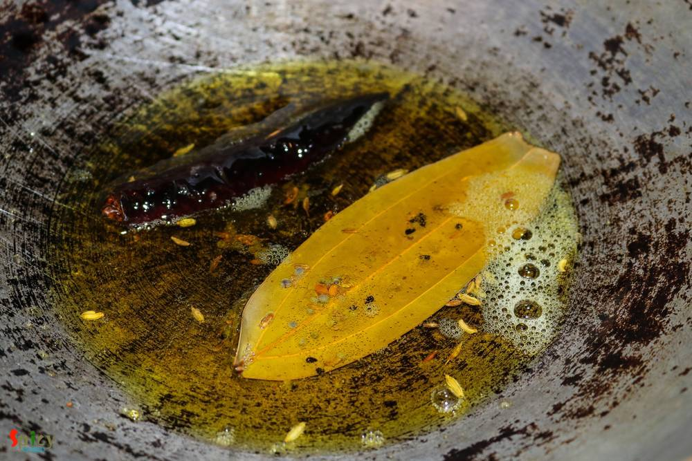
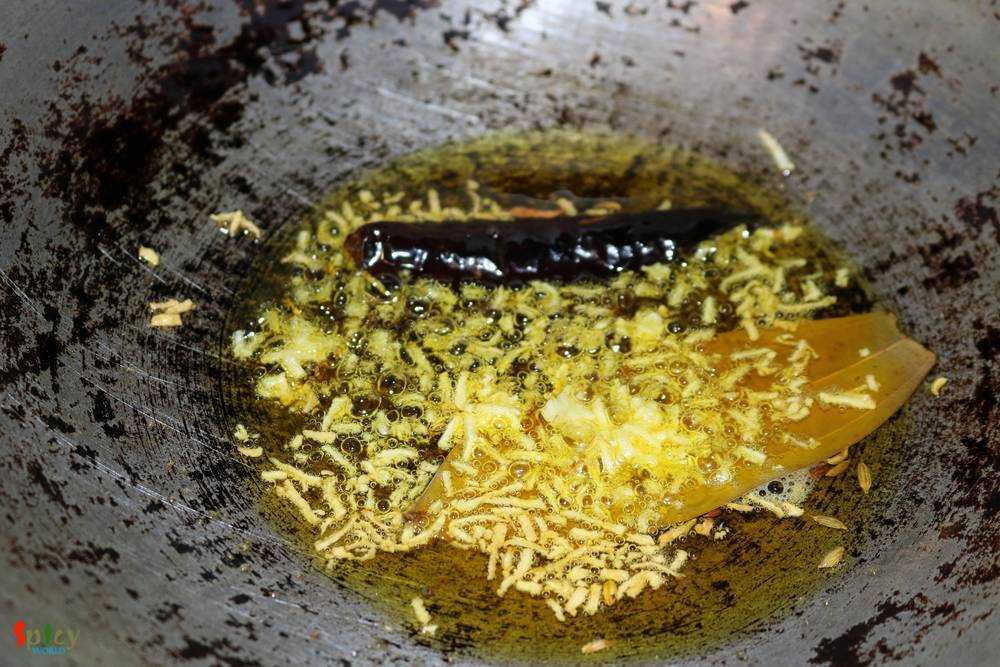
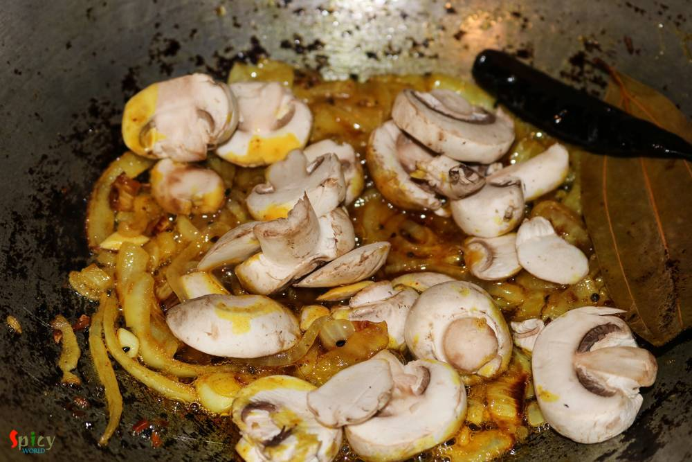

Simple and Easy Recipes
Achaari Pulao / Pickled Rice Pilaf
© 2016 Spicy World, Published on: Jul 6, 2016
I find this particular recipe of pulao very relaxing and different. 'Achaar' / pickle itself is a very tasty ingredient. With rice and some veggies it creates a very beautiful dish which takes so little time to cook. If you are looking for easy but unique weeknight dinner, then 'Achaari Pulao' along with some raita and salads should be the one for you. This is a very flexible preparation, you can add any veggies / garbanzo beans or even some chicken pieces to the pulao. Try this easy recipe in your kitchen and enjoy a quick dinner with your loved ones.

Ingredients
- 1 and half cups of basmati rice.
- 2 Tablespoons of spicy and tangy indian pickle. (mango / chilli / lemon)
- 1 onion, thinly sliced.
- 1 big clove of garlic, crushed.
- Whole spices (1 bay leaf, 1 dry red chilli, 1/4th Teaspoon of each cumin seeds, fennel seeds, fenugreek seeds, nigella seeds, black mustard seeds).
- Half cup of diced mushrooms.
- 2 green chilies.
- Some green peas.
- Spice powder (1 Teaspoon of turmeric powder, 1 Teaspoon of red chilli powder, half Teaspoon of coriander powder).
- Some chopped coriander leaves and mint leaves.
- 4 Tablespoons of oil.
- Water.
- Salt and sugar.

Steps
Heat the oil in a kadhai / pan.
Saute the whole spices for few seconds.
Then add the crushed garlic. Saute for few seconds.
Add the sliced onion with pinch of salt. Fry for 6 minutes.
Then add all the spice powder. Mix well for a minute.

Now add the mushrooms or any veggies / chicken pieces. Cook for few minutes.
Add 1 Tablespoon of pickle. Mix well.

Then add the washed rice and chopped coriander, mint leaves. Mix well.

Add the green peas, green chilies, enough salt and pinch of sugar. Mix well.

Now add 3 cups of warm water. Mix well and it should be taste like sea water. Bring the heat to high and let it come to a boil.

Then bring the heat to low, cover the pan and cook for 20 - 25 minutes.
Now add the remaining pickle / achaar to the pulao, give it a gentle mix and turn off the heat.

Cover the pan and let it rest for 10 minutes then serve.
Your achaari pulao is ready ...
Enjoy this hot with some sweet raita and cucumber salad.
")